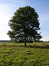

tree

Definition: In botany, a tree is a perennial plant with an elongated stem, or trunk, usually supporting branches and leaves. In some usages, the definition of a tree may be narrower, including only woody plants with secondary growth, plants that are usable as lumber or plants above a specified height. In wider definitions, the taller palms, tree ferns, bananas, and bamboos are also trees.
Source: Wikipedia
Wikipedia Page
Wikidata Page
Occurs in: